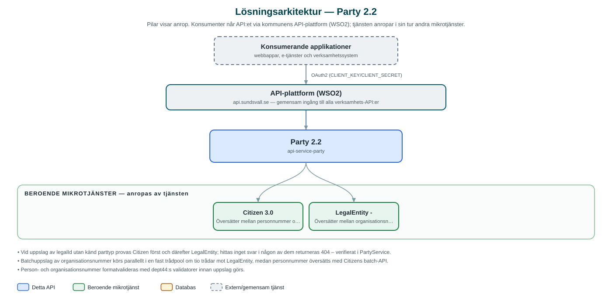

Party
Översätter mellan person-/organisationsnummer (legalId) och kommunens interna part-id (partyId) för privatpersoner och företag.
Om API:et
Party är kommunens gemensamma översättningstjänst för partsidentiteter. I stället för att sprida person- och organisationsnummer mellan system använder kommunens tjänster ett internt part-id (partyId, ett UUID). När ett system behöver växla mellan de två identitetsformerna anropas Party, som fungerar som ett paraply över de bakomliggande tjänsterna Citizen (privatpersoner) och LegalEntity (organisationer).
Tjänsten översätter i båda riktningarna: från legalId till partyId och tillbaka, styrt av parttyp (PRIVATE eller ENTERPRISE). Det finns även uppslag där parttypen är okänd – tjänsten provar då först som privatperson och därefter som organisation. För större volymer finns batchoperationer som översätter många personnummer eller partyId i ett anrop.
Party är medvetet tunn: den lagrar ingenting själv utan validerar inkommande identiteter och delegerar uppslagen till Citizen och LegalEntity. Det gör tjänsten till en central byggsten som de flesta av kommunens API:er beror på.
Det här gör API:et
- LegalId till partyId – Slår upp kommunens interna part-id utifrån person- eller organisationsnummer, med validering av numrets format.
- PartyId till legalId – Slår upp person- eller organisationsnummer utifrån partyId, styrt av parttyp.
- Uppslag utan känd parttyp – Ett partyId kan slås upp utan att parttypen anges – tjänsten provar först som privatperson och därefter som organisation.
- Batchöversättning – Många personnummer eller partyId översätts i ett anrop; organisationsuppslag i batch körs parallellt.
API-dokumentation
API:ets samtliga resurser, parametrar och datamodeller finns beskrivna i en OpenAPI-specifikation som är hämtad ur källkodsförrådet. Den kan utforskas interaktivt i Swagger UI eller laddas ner som YAML.
Teknisk dokumentation
Nedan beskrivs hur tjänsten är uppbyggd, vilka andra tjänster den anropar och vad som krävs för att driftsätta den. Informationen är härledd ur källkoden och dess konfiguration på GitHub.
Arkitektur

API:et är en mikrotjänst (Java 25, Spring Boot via kommunens gemensamma tjänsteplattform dept44 (8.0.8), byggd med Maven). Konsumenter når tjänsten via kommunens gemensamma API-plattform (WSO2) på api.sundsvall.se – tjänsten anropas aldrig direkt. Tjänsten anropar i sin tur andra mikrotjänster i kommunens tjänstelandskap.
Teknikstack
- Språk: Java 25
- Ramverk: Spring Boot via kommunens gemensamma tjänsteplattform dept44 (8.0.8), byggd med Maven
- Övrigt: Resilience4j (circuit breakers mot Citizen och LegalEntity); ingen egen databas – tjänsten är tillståndslös
Beroenden till andra mikrotjänster
Tjänsten anropar följande mikrotjänster. Versionerna är hämtade ur källkodens integrationsklienter.
| Tjänst | Version | Användning |
|---|---|---|
| Citizen | 3.0 | Översätter mellan personnummer och partyId för privatpersoner, enskilt och i batch. |
| LegalEntity | - | Översätter mellan organisationsnummer och partyId för organisationer (handskriven klient utan incheckad specifikation). |
Konfiguration och driftsättning
- application.yml med URL och OAuth2-klientuppgifter för Citizen och LegalEntity
- Circuit breakers ignorerar klientfel (4xx) så att de inte löser ut i onödan
- Ingen databas behöver konfigureras – tjänsten är tillståndslös
- Anrop görs per kommun – municipalityId ingår i alla API-vägar
Noterbart ur källkoden
- Vid uppslag av legalId utan känd parttyp provas Citizen först och därefter LegalEntity; hittas inget svar i någon av dem returneras 404 – verifierat i PartyService.
- Batchuppslag av organisationsnummer körs parallellt i en fast trådpool om tio trådar mot LegalEntity, medan personnummer översätts med Citizens batch-API.
- Person- och organisationsnummer formatvalideras med dept44:s validatorer innan uppslag görs.
- Tjänsten saknar egen databas och lagrar inga identiteter själv – den är enbart ett översättningsskikt över Citizen och LegalEntity.
- Klienten mot LegalEntity är handskriven i koden utan incheckad OpenAPI-specifikation, till skillnad från Citizen-klienten som genereras ur citizen.yml (3.0).
Källkod
Källkoden är öppen och finns hos Sundsvalls kommun på GitHub. I källkodsförrådet finns även instruktioner för att klona, konfigurera och starta tjänsten i egen miljö.